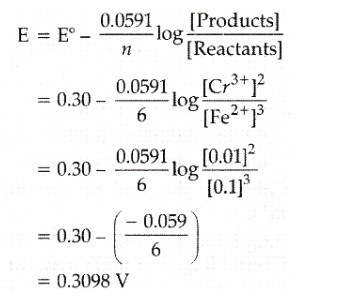

Chapter 1: Solutions
Topic 1: Types of Solutions
3 Marks Questions
Q1- Write one difference in each of the following :
(i) Lyophobic sol and Lyophilic sol
(ii) Solution and Colloid
(iii) Homogeneous catalysis and Heterogeneous catalysis (Outside Delhi Scheme-2017 Set-1)(Outside Delhi Scheme-2017 Set-2)(Outside Delhi Scheme-2017 Set-3)
Solution- (i) Lyophobic sols are solvent-repelling and are not easily dispersed in solvents, requiring special methods for stabilization. Lyophilic sols are solvent-loving and readily disperse in solvents without requiring special methods for stabilization.
(ii) Solutions are homogeneous mixtures where the solute is uniformly distributed in the solvent at the molecular level. Colloids, on the other hand, are heterogeneous mixtures where the dispersed phase (colloidal particles) is dispersed throughout the dispersion medium but not at the molecular level, resulting in larger particles that scatter light.
(iii) Homogeneous catalysis occurs when the catalyst is in the same phase as the reactants. Heterogeneous catalysis occurs when the catalyst is in a different phase (usually solid) from the reactants.
Topic 2: Expressing Concentration of Solutions
2 Marks Questions
Q1- Define the following terms:
(i) Molarity
(ii) Molal elevation constant (Kb) (Outside Delhi Scheme-2014 Set-1)(Outside Delhi Scheme-2014 Set-2)(Outside Delhi Scheme-2014 Set-3)
Solution-
(i) Molarity (M) is defined as the number of moles of solute dissolved in one liter (1 L) of solution. It is expressed as:
Molarity (M) = Number of moles of solute/Volume of solution in liters
(ii) Molal elevation constant (Kb) is a constant specific to a solvent that relates the elevation in boiling point of the solvent to the molality of the solution. It is used in the equation:
ΔTb = Kb x molality
where ΔTb is the elevation in boiling point of the solvent.
3 Marks Questions
Q1- A solution of glucose (molar mass = 180 g mol-1) in water is labelled as 10% (by mass). What would be the molality and molarity of the solution ?(Density of solution = 1.2 g mL-1) (Outside Delhi Scheme-2014 Set-2)(Outside Delhi Scheme-2014 Set-3)
Solution- Given that,
Mass % of the solution = 10%
-> 10g of solute dissolve in 100g solution
Density of the solution, ρ = 1.2g/ml
Molar mass of solute, MB = 180g/mol
Mass of solute, WB = 10g
Mass of the solvent, WA = (100-10)g = 90g
Molality(m) = (nB/WA(g)) x 1000 = ((WB/MB)/WA) x 1000
=((10/180)/90) x 1000 m
= 50/81 m
= 0.617m
Volume of 100g solution, V = W/ρ = 100g/1.2g/ml
=250/3 ml
Therefore,
Molarity(M) = (nB/V(ml)) x 1000
((WB/MB)/V(ml)) x 1000
=((10/180)/(250/3)) x 1000 M
=2/3 M
=0.667 M
Topic 3: Solubility
1 Marks Questions
Q1- Write the main reason for the stability of colloidal sols. (Delhi Scheme-2016 Set-1)(Delhi Scheme-2016 Set-2)(Delhi Scheme-2016 Set-3)
Solution- The main reason for the stability of colloidal sols is the presence of charge on the colloidal particles, which leads to electrostatic repulsion between them. This repulsion prevents the particles from aggregating and keeps the colloid stable.
1 Marks Questions
Q1- Out of BaCl2 and KCl, which one is more effective in causing coagulation of a negatively charged colloidal Sol ? Give reason. (Delhi Scheme-2015 Set-1)(Delhi Scheme-2015 Set-2)(Delhi Scheme-2015 Set-3)
Solution- Barium chloride (BaCl2) is more effective in causing coagulation of a negatively charged colloidal sol compared to potassium chloride (KCl). This is because Ba2+ ions have a higher charge density than K+ ions. The higher charge density of Ba2+ ions results in stronger electrostatic interactions with the negatively charged colloidal particles, leading to greater coagulation or precipitation of the colloidal particles.
Topic 4: Vapour Pressure of Liquid Solutions
Topic 5: Ideal and Non-Ideal Solutions
2 Marks Questions
Q1- What type of deviation is shown by a mixture of ethanol and acetone ? Give reason.(Outside Delhi Scheme-2014 Set-1)(Outside Delhi Scheme-2014 Set-2)(Outside Delhi Scheme-2014 Set-3)
Solution- A mixture of ethanol and acetone shows positive deviation from Raoult's law.
In positive deviation, the vapor pressure of the solution is higher than predicted by Raoult's law. This occurs because the intermolecular forces between the unlike molecules (ethanol and acetone) are weaker than the forces between like molecules (ethanol-ethanol and acetone-acetone). As a result, more molecules escape from the solution surface, increasing the vapor pressure compared to the ideal behavior predicted by Raoult's law.
Q2- State Raoult’s law for a solution containing volatile components. Write two characteristics of the solution which obeys Raoult’s law at all concentrations. (55/6/1 - 2019)(55/6/2 - 2019)(55/6/3 - 2019)
Solution- According to Raoult's law, the vapour pressure of a solution containing a non-volatile solute is directly proportional to the solvent's mole fraction.
ρsolution = KHxsolution
Examine a binary solution consisting of two liquid components, A and B. Let pA and pB represent the partial pressures of component A and component B, respectively, and let p total represent the total vapour pressure of the solution caused by both components.
ρA = xAρ0A
ρB = xBρ0B
The total vapor pressure of the solution of liquids A and B is then, by Dalton's law of partial pressures, the sum of ρA and ρB.
ρTotal=ρA+ρB
Substituting for ρA and ρB, we get
ρTotal = XAρ0A+ XB + ρ0B
The following attributes of the solution that, at all concentrations, complies with Raoult's law are present:
(i) The enthalpy of mixing (ΔHmix) in a binary solution of components A and B is zero, meaning that no thermal change is seen during the preparation of an ideal solution.
(ii) The volume of mixing (ΔVmix) in an ideal solution is likewise zero, meaning that the total volume of the solution equals the sum of the volumes of the components that are being mixed.
Topic 6: Colligative Properties and Determination of Molar Mass
2 Marks Questions
Q1- Define the following terms :
(i) Colligative properties
(ii) Molality (m) (Outside Delhi Scheme-2017 Set-1)(Outside Delhi Scheme-2017 Set-2)(Outside Delhi Scheme-2017 Set-3)
Solution- (i) Colligative properties are properties of solutions that depend only on the number of solute particles present in the solution, not on the identity of the solute particles. Examples include lowering of vapor pressure, elevation of boiling point, depression of freezing point, and osmotic pressure.
(ii) Molality (m) is a measure of the concentration of a solute in a solution, expressed as the number of moles of solute per kilogram of solvent.
Q2- Calculate the freezing point of a solution containing 60 g of glucose (Molar mass = 180 g mol-1) in 250 g of water. (Kf of water = 1·86 K kg mol-1)(Outside Delhi Scheme-2018 Set-1)(Outside Delhi Scheme-2018 Set-2)(Outside Delhi Scheme-2018 Set-3)
Solution-
3 Marks Questions
Q1- A solution containing 15 g urea (molar mass = 60 g mol-1) per litre of solution in water has the same osmotic pressure (isotonic) as a solution of glucose (molar mass = 180 g mol-1) in water. Calculate the mass of glucose present in one litre of its solution. (Outside Delhi Scheme-2014 Set-1)(Outside Delhi Scheme-2014 Set-2)(Outside Delhi Scheme-2014 Set-3)
Solution- Given, Mass of urea, WB = 15g
Molar mass of urea, Mb = 60g
The solution of urea is isotonic to that of glucose solution.
So,

Q2- A 4% solution(w/w) of sucrose (M = 342 g mol-1) in water has a freezing point of 271.15 K. Calculate the freezing point of 5% glucose (M = 180 g mol-1) in water. (Given : Freezing point of pure water = 273.15 K) (55-1-1 - 2019)(55-1-2 - 2019)(55-1-3 - 2019)
Solution-
Topic 7: Abnormal Molar Masses
Chapter 2: Electrochemistry
Topic 1: Electrochemical Cells
Topic 2: Galvanic Cells
5 Marks Questions
Q1- E0cell for the given redox reaction is 2.71 V
Mg(s) + Cu2+(0.01 M) -> Mg2+(0.001 M) + Cu(s)
Calculate Ecell for the reaction. Write the direction of flow of current when an external opposite potential applied is
(i) less than 2.71 V and
(ii) greater than 2.71 V (56-1-1- 2019)(56-1-2- 2019)(56-1-3- 2019)
Solution- According to the Nernst equation
Ecell=E0cell - (2.303RT/nF) log(C2/C1)
Substituting the values,
Ecell = 2.71 - ((2.303x8.314x298)/2x96500)log(0.001/0.01)
Ecell = 2.74 V
(a) The direction of the current flow would not change if an external opposite potential applied was less than 2.71 V.
(b) The direction of current flow would be reversed if an external potential greater than 2.71 V was applied.
Topic 3: Nernst Equation
3 Marks Questions
Q1- Calculate emf of the following cell at 25 °C :
Fe | Fe2+(0.001 M) || H+(0.01 M) | H2(g) (1 bar) | Pt(s)
E°(Fe2+ | Fe) = –0.44 V E°(H+ | H2) = 0.00 V (Delhi Scheme-2015 Set-1)(Delhi Scheme-2015 Set-2)(Delhi Scheme-2015 Set-3)
Solution-
Q2- Calculate e.m.f of the following cell at 298 K :
2Cr(s) + 3Fe2+(0.1M) → 2Cr3+(0.01M) + 3 Fe(s)
Given : E°(Cr3+ | Cr) = – 0.74 V E° (Fe2+ | Fe) = – 0.44 V
Solution-
E°cell= E°cathode - E°anode
E°cell = (-0.44)-(-0.74)V
= 0.30 V

Topic 4: Conductance of Electrolytic Solutions
2 Marks Questions
Q1- (a) Following reactions occur at cathode during the electrolysis of aqueous silver chloride solution :
Ag+(aq) + e- → Ag(s) E° = +0.80 V
H+(aq) + e- →1/2 H2(g) E° = 0.00 V
On the basis of their standard reduction electrode potential (E°) values, which reaction is feasible at the cathode and why ?
(b) Define limiting molar conductivity. Why conductivity of an electrolyte solution decreases with the decrease in concentration ? (Delhi Scheme-2015 Set-1)(Delhi Scheme-2015 Set-2)(Delhi Scheme-2015 Set-3)
Solution-
(a) On the basis of their standard reduction potential (E°) values, cathode reaction is given by the one with higher E° values.
Thus Ag+(aq) + e- → Ag(s) reaction will be more feasible at cathode.
(b) Limiting molar conductivity is the molar conductivity of an electrolyte solution at infinite dilution. It is the molar conductivity value when the electrolyte is completely dissociated into ions and there is no further increase in conductivity with increasing dilution.
The conductivity of an electrolyte solution decreases with the decrease in concentration because as the concentration decreases, the number of ions available to carry the current decreases. This results in a decrease in the overall conductivity of the solution.
Topic 5: Electrolytic Cells and Electrolyis
2 Marks Questions
Q1- Calculate the mass of Ag deposited at cathode when a current of 2 amperes was passed through a solution of AgNO3 for 15 minutes. (Outside Delhi Scheme-2017 Set-1)(Outside Delhi Scheme-2017 Set-2)(Outside Delhi Scheme-2017 Set-3)
Solution- Molar mass of Ag = 108 g /mol
1 F = 96500 c / mol
Reaction at cathode : − Ag+ + e- → Ag (s)
w = ZIT
where, w= mass deposited at cathode
Z= electrochemical constant
I= current
t= time
I = 2amp
t= 15min =15 x 60 = 900s
Z = Eq. wt. substance/96500 = 108/96500
w= (108/96500) x 900 x 2 =2.015g
Topic 6: Batteries
2 Marks Questions
Q1- From the given cells :
Lead storage cell, Mercury cell, Fuel cell and Dry cell
Answer the following :
(i) Which cell is used in hearing aids ?
(ii) Which cell was used in Apollo Space Programme ?
(iii) Which cell is used in automobiles and inverters ?
(iv) Which cell does not have long life ? (Delhi Scheme-2016 Set-1)(Delhi Scheme-2016 Set-2)(Delhi Scheme-2016 Set-3)
Solution- (i) The cell used in hearing aids is the mercury cell. Mercury cells are small in size, have a long shelf life, and provide a stable voltage, making them suitable for devices like hearing aids.
(ii) The cell used in the Apollo Space Programme was the fuel cell. Specifically, the spacecraft used hydrogen-oxygen fuel cells to generate electrical power for various systems.
(iii) The cell used in automobiles and inverters is the lead storage cell, also known as the lead-acid battery. These batteries are known for their ability to provide high surge currents, making them suitable for starting engines in automobiles and providing backup power in inverters.
(iv) The cell that does not have a long life is the dry cell. Dry cells are commonly used in household devices like flashlights and toys. They have a limited lifespan and are not rechargeable.
3 Marks Questions
Q1- (a) Calculate ▲rG0 for the reaction
Mg (s) + Cu2+ (aq) -> Mg2+ (aq) + Cu (s)
Given : E0cell = + 2.71 V, 1 F = 96500 C mol-1
(b) Name the type of cell which was used in Apollo space programme for providing electrical power.(Outside Delhi Scheme-2014 Set-1)(Outside Delhi Scheme-2014 Set-2)(Outside Delhi Scheme-2014 Set-3)
Solution- (a) ▲rG0 = -nFE0cell
Here,n=2
∴▲rG0 = -2 x 96500 x 2.71
= -523030 J
= -523.03 KJ
(b) H2-O2 Fuel cell was used in Apollo space programme for providing electrical power.
Topic 7: Fuel Cells
1 Marks Questions
Q1- Define fuel cell. (Outside Delhi Scheme-2017 Set-1)(Outside Delhi Scheme-2017 Set-2)(Outside Delhi Scheme-2017 Set-3)
Solution- The devices known as fuel cells are those that directly transform the energy released during the combustion of fuels such as hydrogen, methane, methanol, etc. into electrical energy. Take the hydrogen-oxygen fuel cell, for instance.
Topic 8: Corrosion
Chapter 3: Chemical Kinetics
Topic 1: Rate of Reaction and the Factors Influencing it
1 Mark Questions
Q1- Which of the following is affected by catalyst? (55/1/1 2023) (55/1/3 2023)
(a) ΔH
(b) ΔG
(c) Ea
(d) ΔS
Solution- Ea is affected by the catalyst as it lowers it.
3 Marks Questions
Q1- How will the rate of the reaction be affected when: (56/2 2017) (56/1 2017)
(a) surface area of the reactant is increased
(b) temperature of the reaction is decreased
(c) catalyst is added in a reversible reaction ?
Solution- Solution- (a) Rate of the reaction Increases when the surface area of the reactant is increased.
(b) Rate of the reaction decreases when the temperature of the reaction is decreased.
(c) Rate of the reaction Increases when catalyst is added in a reversible reaction.
4 Marks Questions
Q1- The rate of reaction is concerned with decrease in concentration of reactants or increase in the concentration of products per unit time. It can be expressed as instantaneous rate at a particular instant of time and average rate over a large interval of time. Mathematical representation of rate of reaction is given by rate law. Rate Constant and order of a reaction can be determined from rate law or its integrated rate equation. (55/1/2 2023) (55/1/3 2023)
(i) What is average rate of reaction ?
(ii) Write two factors that affect the rate of reaction.
(iii) (1) What happens to rate of reaction for zero order reaction ?
(2) What is the unit of k for zero order reaction ?
Solution- (i) It is defined as the change in the concentration of a product or reactant per unit time.
(ii) Factors affecting rate of reaction:
(1) Concentration of reactants : Rate of reaction increases on increasing the concentration of reactants.
(2) Temperature of reactants : Rate of reaction increases on increasing the temperature. For a 410 Celsius rise in temperature rate of reaction generally becomes double.
(3) Nature of reactants.
(4) Presence of catalysts.
(5) Surface area of reactants.
(6) Effect of radiation.
(iii) (1) Rate is independent of the concentration of reactant(s) so, it remains constant.
(2) mol L–1 s –1
Topic 2: Integrated Rate Equations
2 Marks Questions
Q1- (i) For a reaction P + 2Q Products Rate = k[P]0.5 [Q]1. What is the order of the reaction ?
(ii) Define pseudo first order reaction with an example. (55/1 2022) (55/2 2022)
Solution- (i) Order of reaction is the sum of stoichiometric coefficients of the reactants. So, according to the question, 0.5 + 1 = 1.5.
(ii) A reaction that appears to be of higher order but follows first-order kinetics is called a pseudo first order reaction. Example: Hydrolysis of an ester.
Q2- Analyse the given graph, drawn between concentration of reactant vs. time. (56/1/2 2020) (56/1/3 2020)
(a) Predict the order of reaction.
(b) Theoretically, can the concentration of the reactant reduce to zero after infinite time ? Explain.

Solution- (a) Given graph is of 1st order reaction.
(b) No, due to exponential relation, the curve never touches the x-axis. Hence, it does not become zero.
3 Marks Questions
Q1- The decomposition of NH3 on platinum surface is zero order reaction. If rate constant (k) is 4 x 10–3 Ms–1, how long will it take to reduce the initial concentration of NH3 from 0.1 M to 0.064 M. (56/1/2 2019) (56/1/3 2019)
Solution-
Topic 3: Collision Theory of Chemical Reactions
2 Marks Questions
Q1- Assertion (A) : The molecularity of the reaction H2 + Br22HBr appears to be 2.
Reason (R) : Two molecules of the reactants are involved in the given elementary reaction. (55/1 2022) (55/3 2022) (56/1/2 2020)
Solution- Both A and R are true but R is not correct explanation of A.
Molecularity of reaction is the no. of molecules acting in the rate determining step while order of reaction is the total of all powers to which concentration are raised in the rate law expression. So, both may or may not be same.
Chapter 4: The d-and f-Block Elements
Topic 1: General Properties of the Transition Elements (d-Block)
1 Mark Questions
Q1- Out of the following transition elements, the maximum number of oxidation states are shown by: (55/2/1 2020) (55/2/2 2020)
(A) Sc (Z = 21)
(B) Cr (Z = 24)
(C) Mn (Z = 25)
(D) Fe (Z = 26)
Solution- (C)
Manganese shows maximum number of oxidation states because it has 5 unpaired electrons in 3d and also contains 2 electrons in 4s-subshell.Hence, oxidation states shown by Mn are +2, +3, +4, +5, +6, +7.
2 Marks Questions
Q1- Give reason and select one atom/ion which will exhibit asked property : (56/2 2018) (56/3 2018)
(i) Sc3+ or Cr3+ (Exhibit diamagnetic behaviour)
(ii) Cr or Cu (High melting and boiling point)
Solution- (i) Sc3+ exhibit diamagnetic behaviour, because of absence of unpaired electron.
(ii) Cr has High melting and boiling point, because of presence of strong intermetallic bonding than Cu.
5 Mark Questions
Q1- (a) Account for the following : (56/2 2018) (56/3 2018)
(i) Copper (I) compounds are white whereas Copper (II) compounds are coloured.
(ii) Chromates change their colour when kept in an acidic solution.
(iii) Zn, Cd, Hg are considered as d-block elements but not as transition elements.
(b) Calculate the spin-only moment of Co2+ (Z = 27) by writing the electronic configuration of Co and Co2+.
Solution- (a) (i) Copper (I) compounds are white whereas Copper (II) compounds are colored because, in Cu+1(3d10)Cu+1 (3d10) there is absence of unpaired electrons while in Cu+2(3d9)Cu+2,/sup. 3d9 compounds are colored due to unpaired e- shows d-d transition.
(ii) Chromate changes to dichromate ion in acidic medium, hence color is changed.
(iii) Due to completely filled d-orbitals in their ground state as well as in oxidized state, Zn, Cd, Hg are considered as d-block elements but not as transition elements.
(b)
Topic 2: The Lanthanoids
1 Mark Questions
Q1- Lanthanoid contraction is due to increase in : (55/1/1 2022 Term 1) (55/1/3 2022 Term 1)
(a) atomic number
(b) shielding by 4f electrons
(c) effective nuclear charge
(d) atomic radius
Solution- (C)
The lanthanoid contraction refers to the fact that the 5s and 5p orbitals penetrate the 4f sub-shell so the 4f orbital is not shielded from the increasing nuclear change, which causes the atomic radius of the atom to decrease.
Q2- The most common and stable oxidation state of a Lanthanoid is : (55/1/2 2023)
(a) +2
(b) +3
(c) +4
(d) +6
Solution- (B)
3 Marks Questions
Q1-Give three points of difference between lanthanoids and actinoids. (56/1 2018) (56/2 2018)
Solution- (i) In the case of Lanthanoide, progressive filling of 4f-orbital takes place while 5f-orbital is progressively filled in the case of actinoids.
(ii) Except for Promethium, lanthanoid elements are non-radioactive in nature, whereas all actinoid series members are radioactive.
(iii) Lanthanoids are less reactive as compared to actinoids.
(iv) The magnetic property of Lanthanoids is less complex as compared to actinoids.
Topic 3: The Actinoids
1 Mark Questions
Q1- The chemistry of actinoids elements is not so smooth as that of the lanthanoids. Why? (56/3 2017) (56/2 2017)
Solution- Lanthanoids display a limited number of oxidation states because the energy difference between 4f, 5d, and 6s orbitals is quite large. On the other hand, the energy difference between 5f, 6d, and 7s orbitals is very less. Hence, actinoids display a larger number of oxidation states.
Chapter 5: Coordination Compounds
Topic 1: Werner’s Theory of Coordination Compounds
4 Marks
Q1- Coordination compounds are widely present in the minerals, plant and animal worlds and are known to play many important functions in the area of analytical chemistry, metallurgy, biological systems and medicine.Alfred Werner's postulated the use of two types of linkages (primary and secondary), by a metal atom/ion in a coordination compound. He predicted the geometrical shapes of a large number of coordination entities using the property of isomerism. The Valence Bond Theory (VBT) explains the formation, magnetic behaviour and geometrical shapes of coordination compounds. It, however, fails to describe the optical properties of these compounds. The Crystal Field Theory (CFT) explains the effect of different crystal fields (provided by the ligands taken as point charges) on the degeneracy of d-orbital energies of the central metal atom/ion.
Answer the following questions : (56/3/1, 2023)
(i) When a coordination compound NiCl2 . 6H2O is mixed with AgNO3 solution, 2 moles of AgCl are precipitated per mole of the compound. Write the structural formula of the complex and secondary valency for Nickel ion.
(ii) Write the IUPAC name of the ionisation isomer of [Co(NH3)5(SO4)]Cl.
(iii) Using Valence Bond Theory, predict the geometry and magnetic nature of :
(1) [Ni(CO)4]
(2) [Fe(CN)6]3-
[Atomic number : Ni = 28, Fe = 26]
Solurion- (i) [Ni(H2O)6]Cl2,
(ii) Pentaamminechloridocobalt(III)sulphate
(iii)
(1) [Ni(CO)4] – tetrahedral, diamagnetic
(2) [Fe(CN)6] 3– - octahedral, paramagnetic
Topic 2: Definitions of Some Important Terms Pertaining to Coordination Compounds
1 Mark
Q1- Write the coordination number and oxidation state of Platinum in the complex [Pt(en)2Cl2]. (56/1, 2018)
Solution- Coordination Number = 6 , Oxidation State = +2
Topic 3: Nomenclature of Coordination Compounds
Q1- (i) Write the IUPAC name of the complex [Cr(NH3)4 Cl2]Cl.
(iii) Why is [NiCl4]2– paramagnetic but [Ni(CO)4] is diamagnetic ? (56/1, 2014)(56/2, 2014)(56/3, 2014)
(At. nos. : Cr = 24, Co = 27, Ni = 28)
Solution-
(i) The IUPAC name of the complex[Cr(NH3)4Cl2]Cl is Tetraamminedichlorochromium(III) chloride.
(iii) In [NiCl4]2−, the oxidation state of Ni is +2. Chloride is a weak field ligand and does not cause pairing up of electrons
against the Hund's rule of maximum multiplicity. As a result, two unpaired electrons are present in the valence
d-orbitals of Ni which impart paramagnetic character to the complex. On the other hand, carbonyl is a strong field ligand
and causes pairing up of electrons against the Hund's rule of maximum multiplicity. As a result, no unpaired electrons
are present and hence, the complex is diamagnetic.
.png)
2 Marks
Q1- Write IUPAC name of the complex [Pt(en)2Cl2]. Draw structures of geometrical isomers for this complex.
Solution- Bis(ethan-1,2-diamine)dichloridoplatinum (II)(56/1/1, 2019)

Q2- Using IUPAC norms write the formulae for the following :
(i) Hexaamminecobalt(III) sulphate
(ii) Potassium trioxalatochromate(III)(56/1/1, 2019)
Solution- i) [Co(NH3)6]2(SO4)3
ii) K3[Cr(ox)3]
Q3- Write IUPAC name of the complex [Co(en)2(NO2)Cl]+. What type of structural isomerism is shown by this complex ? (56/1/2, 2019)
Solution- Chloridobis(ethane-1,2-diamine)nitrito-N-cobalt(III) ion
Linkage isomerism
Q4- Using IUPAC norms, write the formulae for the following complexes : (56/1/2, 2019)
(a) Hexaaquachromium(III) chloride
(b) Sodium trioxalatoferrate(III)
Solution- i) [Cr(H₂O)₆]Cl₃
ii) Na₃[Fe(ox)₃]
Q5-
(a)Write the IUPAC name and hybridisation of the complex [CoF6]3-. (56/3/1, 2020)
(Given : Atomic number of Co = 27)
(b)What type of isomerism is shown by the complex [Co(en)2 Cl2]2+ ?
(c)Name the structure of an isomer of this complex which is optically active.
Solution- a) Hexafluoridocobaltate(III) sp3d2
b) Isomerism – Geometrical / optical cis isomer is optically active
3 Marks
Q1-
(a) Write the hybridization and shape of the following complexes :
(i) [Co(NH3)6]3+
(ii) [NiCl4]2-
(Atomic number : Co = 27, Ni = 28)
(b) Out of NH3 and ‘en’, which ligand forms more stable complex with metal and why ? (56/1/MT, 2015)
Solution- (a)
(i) (i).png)
(ii) (ii).png)
(b)
Q2- (a) Give the IUPAC name and electronic configuration of central metal atom in terms of t2g and eg of K4[Mn(CN)6].(56/2/1, 2020)
(b) What is meant by ‘Chelate effect’ ? Give an example.
Solution- (a) Potassiumhexacyanidomanganate(II) / Potassiumhexacyanomanganate(II)
t2g5 eg0
(b) Increased stability of the complex due to presence of chelating or didentate or polydentate ligands.
e.g.[Cr(en)3]3+
Q3- Write the hybridisation and magnetic characters of the following complexes : (56/2/1, 2020)
(i) [Fe(CN)6]4–
(ii) [CoF6]3–
(iii) [Ni(CO)4]
Solution- (i) d2sp3,diamagnetic
(ii) sp3d2, paramagnetic
(iii) sp3, diamagnetic
Topic 4: Isomerism in Coordination Compounds
1 Mark
Q1- (ii) What type of isomerism is exhibited by the complex [Co(en)3]3+ ?
(en = ethane-1,2-diamine) (56/1, 2014))(56/2, 2014)(56/3, 2014)
Solution- The complex [Co(en)3]3+ exhibits optical isomerism. Its optical isomers are shown in the image.
Q2- What type of isomerism is shown by the complex [Co(NH3)5 NO2] Cl2 ?(56/2/1, 2020)
Solution- Linkage Isomerism
Q3- The compounds [Co(SO4) (NH3)5] Br and [Co(Br) (NH3)5] SO4 represent : (56/1/1, 2023)
(a) optical isomerism (b) linkage isomerism
(c) ionisation isomerism (d) coordination isomerism
Solution- (c) ionisation isomerism
2 Marks
Q1- Write down the IUPAC name of the complex [Co(NH3)5(CO3)]Cl. What type of isomerism is shown by this complex ? (56/1/MT, 2015)
Solution- IUPAC Name: Pentaaminecarbonatocobalt(III) chloride. The above complex shows Linkage isomerism and the linkage isomer is
Q2- Using IUPAC norms write the formulae for the following coordination compounds :(56/1/MT, 2015)
(i) Tetrachloridocuprate(II)
(ii) Potassium tetrahydroxozincate(II)
Solution: (i) K2CuCl4 also written as (K+2·[CuCl4]2-
(ii) Zn(OH)2-
Q3- Out of [CoF6]3– and [Co(en)3]3+, which one complex is (56/1/1, 2019)
(i) paramagnetic
(ii) more stable
(iii) inner orbital complex and
(iv) high spin complex
(Atomic no. of Co = 27)
Solution- i) [CoF6]3-
ii)[Co(en)3]3+
iii) [Co(en)3]3+
iv) [CoF6]3-
Q4- Assertion(A): Linkage isomerism arises in coordination compounds because of ambidentate ligand.
Reason (R) : Ambidentate ligand like NO2 has two different donor atoms i.e., N and O. (56/1/1, 2020)
Solution- Both Assertion (A) and Reason (R) are correct statements, and Reason (R) is the correct explanation of the Assertion (A).
Q5- Write the IUPAC names of the following : (56/2/1, 2023)
(i) [Co(NH3)5(ONO)]2+
(ii) K2[NiCl4]
Solution- (i) Pentaamminenitrito-O-cobalt(III) ion
(ii) Potassium tetrachloridonickelate(II)
Q6-
(i)What is a chelate complex ? Give one example.
(ii) What are heteroleptic complexes ? Give one example. (56/2/1, 2023)
Solution- (i) • A complex formed by a didentate or a polydentate ligand.
• [Co(ox)3]3- (or any other suitable example)
(ii) • Complexes in which a metal is bound to more than one kind of donor groups or ligands.
• [Co (NH3)4Cℓ2]+ (or any other suitable example)
3 Marks
Q1- Using IUPAC norms write the formulae for the following :
(a) Sodium dicyanidoaurate(I)
(b) Tetraamminechloridonitrito-N-platinum(IV) sulphate (56/1/1, 2017)
Solution- (a) Na[Au(CN)2
(b) [Pt(NH3)4Cl(NO2)]SO4
Q3-
(a) What type of isomerism is shown by the complex [Co(NH3)5 (SCN)]2+ ?
(b) Why is [NiCl4]2- paramagnetic while [Ni(CN)4]2- is diamagnetic ? (Atomic number of Ni = 28)
(c) Why are low spin tetrahedral complexes rarely observed ?(56/1/1, 2017)
Solution-
(a) Linkage isomerism is shown by the complex.
(b) Cl-is a weak field ligand so it cannot pair up the electron while CN-is a strong field ligand that can pair up the electrons.
(c) The strong field ligands cause pairing of electrons and in most cases make the last d-orbital empty and thus tetrahedral complex is not formed.
Q4-
(a) Write the formula of the following coordination compound :
Iron(III) hexacyanoferrate(II)
(b) What type of isomerism is exhibited by the complex [Co(NH3)5Cl]SO4 ?
(c) Write the hybridisation and number of unpaired electrons in the complex [CoF6]3–. (Atomic No. of Co = 27) (56/1, 2018
Solution- (a) Fe4[Fe (CN)6]3
(b) Ionisation isomerism
(c) sp3d2, 4
Q5-
(i) Write the IUPAC name of the following complex : (56/2/1, 2022)
[Co(NH3)4(H2O)Cl]Cl2
(ii) What is the difference between an Ambidentate ligand and aBidentate ligand ?
(iii) Out of [Fe(NH3)6]3+ and [Fe(C2O4)3]3 , which complex ismore stable and why ?
Solution- (i) Tetraammineaquachloridocobalt (III) chloride
(ii) Ambidentate ligand is a ligand which has two different donor atomsand either of the two ligates with metal atom or ion in the complex whereaswhen a ligand ligates through two donor atoms is called a bidentate ligand.
(iii)Fe[C2O3]3-, due to chelate effect / due to cyclic structure.
Topic 5: Bonding in Coordination Compounds
Topic 6: Bonding in Metal Carbonyls
Topic 7: Importance and Applications of Coordination Compounds
1 Mark
Q1- The oxidation state of Fe in [Fe(CO)5] is
(a) + 2 (b) 0
(c) + 3 (d) + 5
Solution- (b) 0
Q2- Which of the following is the most stable complex species ? (56/3/1, 2023)
(a) [Fe(C2O4)3]3-
(b) [Fe(CN)6]3-
(c) [Fe(CO)5]
(d) [Fe(H2O)6]3+
Solution- (a) [Fe(C2O4)3]3-
2 Marks
Q1-
(a) Although both [NiCl4]2– and [Ni(CO)4] have sp3 hybridisation yet [NiCl4]2– is paramagnetic and [Ni(CO)4] is diamagnetic. Give reason. (Atomic no. of Ni = 28) (56/2/1, 2019)
(b) Write the electronic configuration of d5 on the basis of crystal field theory when
(i) △o < P
(ii) △o> P
Solution-
a) In [NiCl4]2-, Cl- is a weak field ligand due to which there are two unpaired electrons in 3d orbital whereas in [Ni(CN)4]2-, CN- is a strong field ligand due to which pairing leads to no unpaired electron in 3d- orbital Or structural representation
b) i) t2g3eg2
ii) t2g5eg0
2 Marks
Q1- Write the hybridization and magnetic behaviour of [Ni(CN)4]2 [Atomic number : Ni = 28]
Solution- dsp2, diamagnetic
3 Marks
Q1- (b) When a co-ordination compound NiCl2.6H2O mixed with AgNO3, 2 moles of AgCl are precipitated per mole of the compound. Write (56/1/1, 2022)
(i) Structural formula of the complex.
(ii) Secondary valency of 'Ni' in the complex.
(iii) IUPAC name of the complex.
Solution- (i) t33e1g
(ii) dsp2 , diamagnetic
(iii) [CoCl2(en)2]+
Q2- (a) Draw the geometrical isomers of [Co(en)2Cl2]2+. Which geometrical isomer of [Co(en)2Cl2]2+ is not optically active and why ?(56/2/1, 2023)
(b) Write the hybridisation and magnetic behaviour of [CoF6]3–. [Given : Atomic number of Co = 27]
Solution- (a)
(b) sp3d2 , paramagnetic.
Chapter 6: Haloalkanes and Haloarenes
Topic 1: Classification
Topic 2: Nomenclature
1 Mark
Q1- Write the IUPAC name of the following compound :
H3C - C = C - CH2 - OH
| |
CH3 Br
(56/1/1, 2017)
Solution- 2-bromo-3-methylbut-2-en-1-ol.
Q2- Racemisation occurs in (56/3/1, 2020)
(A) SN2 reaction
(B) SN1 reaction
(C) Neither SN2 nor SN1 reactions
(D) SN2 reaction as well as SN1 reaction
Solution- (B) SN1 reaction
3 Marks
Q1- The following compounds are given to you : 2-Bromopentane, 2-Bromo-2-methylbutane, 1-Bromopentane
(a) Write the compound which is most reactive towards SN2 reaction.
(b) Write the compound which is optically active.
(c) Write the compound which is most reactive towards -elimination reaction.(56/1/1, 2017)
Solution-
(a) 1-Bromopentane will be most reactive towards SN2 as it is least hindered.Primary alkyl halides are most reactive for SN2 reaction.
(b) 2-Bromopentane (Figure B) has a chiral carbon in it. So this compound is optically active.
(c) 2-Bromo-2-methyl pentane will give a stable elimination product. (Most stable alkene i. e. more substituted)
Topic 3: Nature of C–X Bond
1 Mark Questions
Q1- Which would undergo SN2 reaction faster in the following pair :
CH3
|
CH3-CH2-Br and CH3-C-CH3
|
Br
(56/1/MT, 2015)
Solution- Primary alkyl halides undergo SN2 reactions faster than tertiary alkyl halides.
2 Marks Questions
3 Marks Questions
Q1- Justify and arrange the following compounds of each set in increasing order of reactivity towards the asked displacement :
(a) 1-Bromobutane, 2-Bromobutane, 2-Bromo-2-Methylpropane
(SN1 reaction)
(b)1-Bromobutane, 2-Bromobutane, 2-Bromo-2-Methylpropane
(SN2 reaction) (56/2/1, 2020)
Solution- (a) 1-bromobutane < 2-bromobutane < 2-bromo-2-methylpropane. Tertiary carbo cation is more stable than secondary than primary.
(b) 2-bromo-2-methyl propane < 2-bromobutane< 1-bromobutane, due to decrease in steric hindrance.
5 Marks Questions
Topic 4: Methods of Preparation of Haloalkanes
Q1- Write the mechanism of the following reaction :
CH3CH2OH + HBr −−−→ CH3CH2Br+H2O (56/1, 2014))(56/2, 2014)(56/3, 2014)
Solution- CH3CH2OH + H−Br→CH3CH2Br+H2O
MECHANISM:
1) The lone pair on oxygen attacks the H-Br molecule forming a hydronium ion.
2) Formation of carbocation.
3) Attack of Nucleophile Br−.

Topic 5: Preparation of Haloarenes
Q1-
(a) Draw the structures of major monohalo products in each of the following reactions :

(b) Which halogen compound in each of the following pairs will react faster in SN2 reaction :
(i) CH3Br or CH3I
(ii) (CH3)3C – Cl or CH3 – Cl (56/1, 2014))(56/2, 2014)(56/3, 2014)
Solution-
(a)
(b)
(i) CH3I will react faster in SN2 reaction than CH3Br. This is because I− is a better leaving group, owing to its greater size than Br−.
As a result, it will leave at a faster rate in the presence of an incoming nucleophile.
(ii) CH3Cl will react faster in SN2 reaction than (CH3)3−Cl, as CH3−Cl is a primary halide whereas (CH3)3C−Cl is a tertiary halide.
Primary halides undergo SN2 reactions faster.
Topic 6: Physical Properties
1 Mark
Q1- Define ambidient nucleophile with an example.
Solution- Nucleophiles having two nucleophilic centres. CN- /SCN- / NO2- (any one)
Topic 7: Chemical Reactions
1 Mark
Q1- Write the structure of the alkene formed by dehydrohalogenation of 1-bromo-1-methylcyclohexane with alcoholic KOH. (56/1, 2018)
Solution- 
3 Marks
Q1- (a) Which isomer of C5H10 gives a single monochloro compound C5H9Cl in bright sunlight ? (56/2/1, 2023)
(b) Arrange the following compounds in increasing order of reactivity towards SN2 reaction :
2-Bromopentane, 1-Bromopentane, 2-Bromo-2-methylbutane
(c) Why p-dichlorobenzene has higher melting point than those of ortho and meta-isomers ?
Solution- (a) Cyclopentane
(b) 2-Bromo-2-methylbutane < 2-Bromopentane < 1-Bromopentane
(c) Because para isomer fits well into the crystal lattice due to symmetry.
Topic 8: Polyhalogen Compounds
1 Mark
Q1- The synthesis of alkyl fluoride is best obtained from : (56/1/1, 2023)
(a) Free radicals (b) Swartz reaction
(c) Sandmeyer reaction (d) Finkelstein reaction
Solution- (b) Swartz reaction
Q2- Assertion (A) : Nucleophilic substitution of iodoethane is easier than chloroethane.
Reason (R) : Bond enthalpy of C-I bond is less than that of C-Cl bond.
Solution- Both (A) and (R) are true and (R) is the correct explanation of (A).
3 Marks
Q1- Among all the isomers of molecular formula C4H9Br, identify (56/2/1, 2019)
(a) the one isomer which is optically active.
(b) the one isomer which is highly reactive towards SN2.
(c)the two isomers which give same product on dehydrohalogenation with alcoholic KOH.
Solution- (a) 3M.png)
(b) 3M.png)
(c) 3M.png)